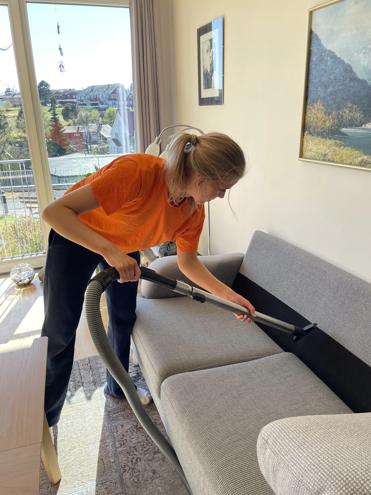

Gode råd til eldre og pårørende
Om hjelp hjemme, pris, trygghet og hverdagen i Trondheim, og om hvordan du som pårørende kan hjelpe mor eller far.

For pårørende
 For pårørende
For pårørendeMor bor alene og klarer seg nesten: slik kan dere få hjelp
To steg du kan ta denne uka, og hjelpen familien, kommunen og frivillige kan gi.
Når du bor langt unna mor eller far
Faste ringetider og noen i nærheten du stoler på gjør avstanden lettere.
 For pårørende
For pårørendeSlik snakker du med mamma om å ta imot hjelp
Setninger du kan bruke, og hvorfor det hjelper å starte med én liten ting.
Se flere råd (3)Vis færre råd
 For pårørende
For pårørendeSkal mor hjem fra sykehuset? Dette kan du ordne på forhånd
En sjekkliste før hun kommer hjem: mat, sengetøy, posten og hvem du spør.
 For pårørende
For pårørendeNår mor blir alene: praktisk hjelp etter at far er borte
Oppgavene far pleide å gjøre, tatt én om gangen og i mors tempo.
 For pårørende
For pårørendeTegn på at mamma trenger litt mer hjelp
Posthaugen, det tomme kjøleskapet og snøen som ikke er måkt: dette kan du se etter.
Pris og praktisk
 Pris og praktisk
Pris og praktiskSlik søker du hjemmehjelp fra kommunen i Trondheim
Hvem du ringer, hva kommunen ser på, og hva du gjør hvis svaret blir nei.
 Pris og praktisk
Pris og praktiskHjemmehjelp i Trondheim: kommunal eller privat?
Kommunens hjemmehjelp på vanlig norsk, og hvordan du kan ha begge deler.

Pris og praktiskHva koster privat hjemmehjelp i Trondheim?
Med og uten medlemskap, regnet ut i kroner for en hel måned.
Hjelp i hverdagen
 Hjelp i hverdagen
Hjelp i hverdagenHvor ofte trenger du vaskehjelp? Slik kan en fast rytme se ut
Hva ett besøk rekker, rom for rom, og hva hver rytme koster.
 Hjelp i hverdagen
Hjelp i hverdagenSlik gjør du hagen klar for vinteren: en sjekkliste for høsten
En rolig sjekkliste for høsten, med det som kan vente til våren.
 Hjelp i hverdagen
Hjelp i hverdagenEnsomhet blant eldre: når dagene blir lange
Små grep som kan gjøre dagene litt kortere, for deg selv eller for mor som bor alene.
Se flere råd (7)Vis færre råd
 Hjelp i hverdagen
Hjelp i hverdagenFølge til legen: når mor ikke vil gå alene
Hvem som kan følge mor til legen når du ikke får fri, og hvordan dere ordner turen.
 Hjelp i hverdagen
Hjelp i hverdagenHandlehjelp for eldre: når posene har blitt tunge
Netthandel, hjelp fra kommunen eller en privat hjelper: hva som passer når.
 Hjelp i hverdagen
Hjelp i hverdagenSelskap for eldre i Trondheim: noen å drikke kaffe med
Besøksvenn, kafétreff og frivilligsentraler der eldre kan få selskap og kaffe.
 Hjelp i hverdagen
Hjelp i hverdagenLyspærer, batterier og ved: småjobbene som blir liggende
Ingen av dem er store jobber, men de blir liggende. Her går grensen mot fagfolk.
 Hjelp i hverdagen
Hjelp i hverdagenHvem skal måke fortauet i Trondheim? Slik er reglene for huseiere
Hva kommunen brøyter og hva du må måke selv: fortauet, inngangen og strøsanden.
 Hjelp i hverdagen
Hjelp i hverdagenStoropprydding hjemme hos mor: slik tar dere det i små steg
Ett rom om gangen, og det er mor som bestemmer hva som skal bli.
 Hjelp i hverdagen
Hjelp i hverdagenHagearbeid for eldre i Trondheim: gress, luking og raking
Hageåret fra raking om våren til løv om høsten, og hva som blir lettere med litt hjelp.
Digital hjelp og svindel
 Digital hjelp og svindel
Digital hjelp og svindelSlik unngår du svindel på mobilen
Falske SMS-er og anrop fra «banken»: slik kjenner du igjen svindel, og hvem du kan ringe.
Videosamtale med mor: slik kommer hun i gang med FaceTime
Stegene på iPhone og iPad, og det som pleier å stoppe når dere øver sammen.
 Digital hjelp og svindel
Digital hjelp og svindelGratis datahjelp for eldre i Trondheim: kurs og veiledning
Gratis veiledning og kurs i Trondheim, og når hjelp hjemme passer bedre.

Trygghet

TrygghetBo hjemme lenger: små grep som gjør hverdagen lettere
Trygghetsalarm, hjelpemidler og tilskudd samlet, og hvem som tar det tunge i hverdagen.
 Trygghet
TrygghetEtter et fall: når gulvvask og handling blir for mye
Legen, kommunen og hjelp med gulv og handling de første ukene: hvem som gjør hva.
 Trygghet
TrygghetFast hjelper for eldre: derfor betyr samme person så mye
Hva som blir lettere når det er samme person som kommer.
Bestill en gratis prat
Fortell oss hva du trenger hjelp til. Du trenger ikke ha bestemt deg for noe. Vi ringer deg og tar oss god tid.
Hverdager 09–18411 24 968